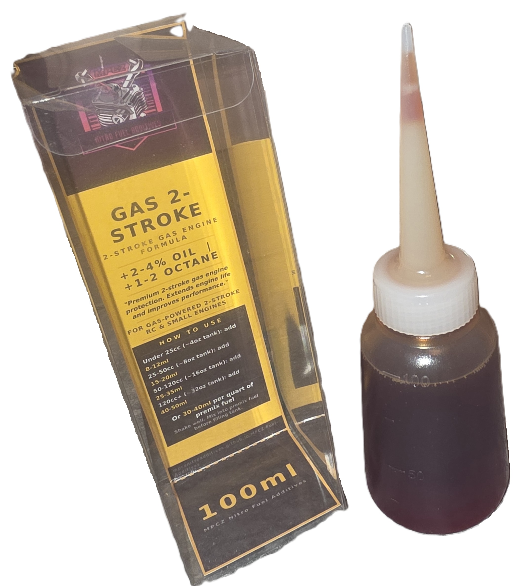

MPCZ precision engineering extended to 2-stroke gasoline RC engines. The same technology platform, retuned for petrol fuel chemistry and gas engine operating conditions.

MPCZ Gas brings the full Norwegian precision formulation philosophy to 2-stroke gasoline RC powerplants. Where nitro engines operate on methanol-based fuel with inherent lubricity, gas engines present different chemistry: higher cylinder temperatures, different combustion byproducts, and varying oil-mix ratios. MPCZ Gas is tuned specifically for this environment, providing the same level of wear protection, surface treatment, and friction reduction our nitro customers rely on.
Formulated for petrol fuel chemistry, compatible with standard oil-mix ratios and effective across the combustion conditions unique to 2-stroke gasoline engines.
Gas engines run hotter than equivalent nitro powerplants. MPCZ Gas uses a higher-temperature ceramic compound rated for the extended thermal range of gasoline combustion.
Zinc anti-wear and film-forming friction reducers provide the same boundary-lubrication protection as our nitro line, adapted for gas engine surface materials and clearances.
Synthetic ester base helps resist carbon deposit formation in the combustion chamber and exhaust port, a common issue in high-mileage gas RC engines.
MPCZ Gas dosing is based on engine displacement rather than nitro class. Match your engine's cc displacement to the scale guide below. Start at the lower end of the range and increase after confirming stable engine behavior over a few tanks.
| Scale | Engine (cc) | Per Tank | Per Quart | Oil Increase | Notes |
|---|---|---|---|---|---|
| 1/16 | 49 cc | 1-2 ml | 5-8 ml | +2-3% | Light protection |
| 1/10 | 23-26 cc | 2-3 ml | 8-12 ml | +3-4% | Standard protection |
| 1/5 | 30-32 cc | 3-5 ml | 12-20 ml | +4-5% | Full protection |